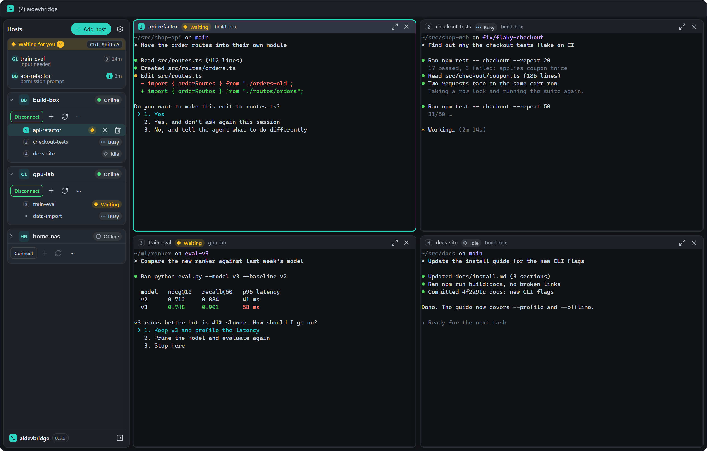

aidevbridge
See which coding agent is waiting for you.
All your tmux sessions, on all your Linux hosts, in one app. Windows, macOS, Android.
Waiting
Busy
Idle
All your tmux sessions, on all your Linux hosts, in one app. Windows, macOS, Android.
